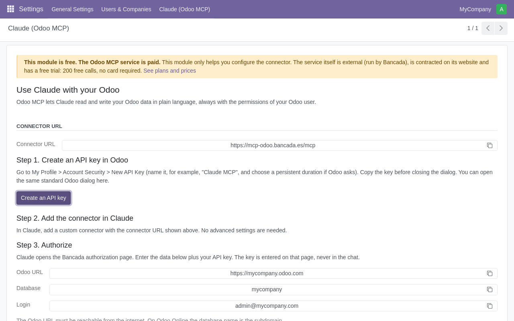
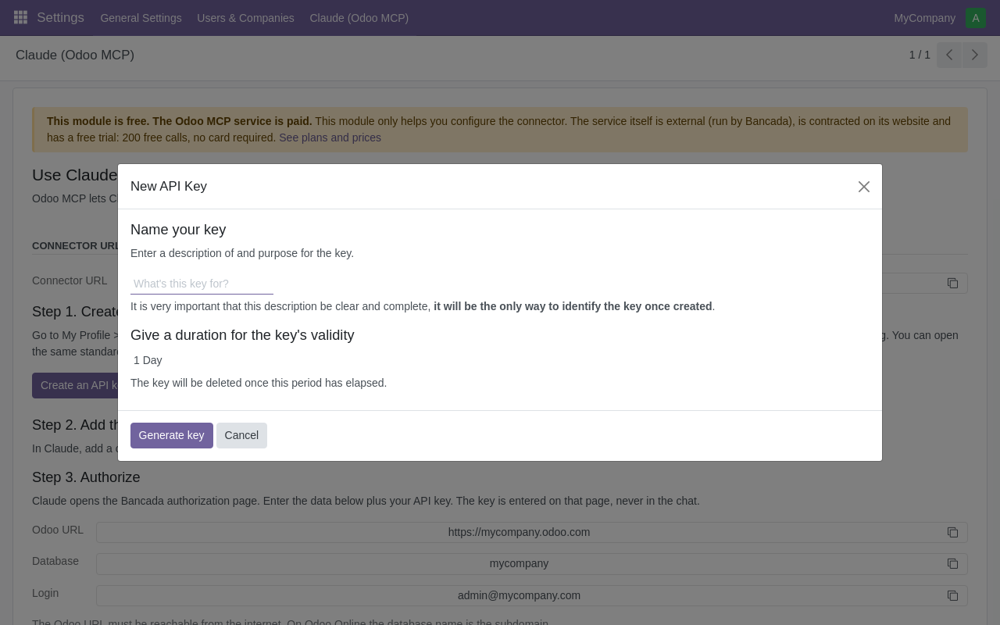

This module is free and only helps you configure the connector. The Odoo MCP service is external (run by Bancada at mcp-odoo.bancada.es), it is a paid service and it comes with a free trial: 200 free calls, no card required. Plans start at 12 EUR/month (excl. VAT). See plans and prices.
ENS certified (Spanish National Security Framework) Aligned with ISO 27001 Signed DPA Odoo 16 to 19
A record of which models and records each user has read or changed, and when.
One URL. No ports to open and no updates to manage. Works with Odoo 16 to 19 (Odoo Online, Odoo.sh and on-premise).
https://mcp-odoo.bancada.es/mcp and the button to create an API key.Pricing as published at mcp-odoo.bancada.es (excl. VAT, cancel any time). Every time Claude reads or changes something in your Odoo counts as one call.
| Plan | Price | Calls / 30 days | Users |
|---|---|---|---|
| Small business | 12 EUR / month | 300 | 1 active user |
| Team | 29 EUR / month | 2,000 | up to 5 active users |
| Business | 79 EUR / month | 5,000 | up to 15 active users |
| Custom | Contact Bancada: custom volume, billing and a signed contract and DPA | ||
Plans and conditions may change: the website is the reference. ENS certification and the access log are features of the paid service, not of this module.


Illustrations of the page. Odoo is a trademark of Odoo S.A.; Claude is a trademark of Anthropic. Bancada is not affiliated with either company.